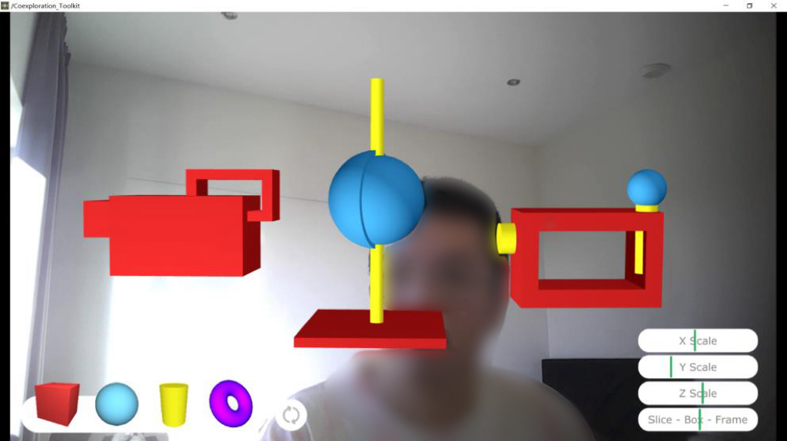
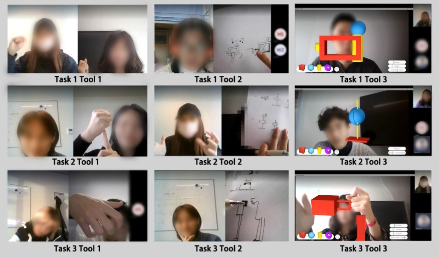
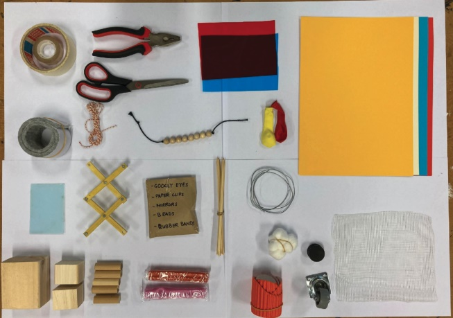

Card 01
ShapeOverlay
A shared digital reference that lets remote collaborators handle the same 3D form together on a video call.
Multiple semesters · students from different academic levels · design methods
In the autumn of 2021, I stepped into a master’s course holding a question of my own. I was not there as a student. I was there as the person with a real research problem, looking for people willing to take it somewhere I could not reach alone.
The course was Constructive Design Research, where students learn to build knowledge by making things and studying what happens. My part was to bring a live question from the heart of my PhD, hand it to two teams, and then walk with them from the first framing all the way to the final analysis.
The question I handed over
What goes missing when a team designs apart?
My question grew out of watching designers struggle during the pandemic. When teams could no longer gather around one table, something quiet went missing. They could still talk, still share screens, still present finished ideas to each other. What they lost was the messy middle, the part where people explore together, build on a half formed thought, and shape an idea in real time. I call this co exploration.
I brought this to the students as a real challenge, not a textbook exercise. I shared what I had found in my earlier study and in my review of existing tools, most of which simply copied what already worked in the same room. Then I left them with the open question: how might we support co exploration when a design team works apart?
How I coach
Closer to the process than the outcome
I believe the most useful thing a coach can offer is not an answer but a better question. So I stayed close to how the teams worked rather than what they produced. I helped them shape their design interventions, find the right literature, choose methods that fit the question, and plan how they would gather and read their data.
I also protect time for reflection. Each week we looked back before looking forward. What surprised you. What did not work. What does that tell you about the problem. Reflection is where a project turns from activity into insight, and I wanted the students to feel that shift for themselves.
Two answers
Two teams took the same question in opposite directions. One reached for the screen. One reached for their hands.
Card 01
ShapeOverlay
A shared digital reference that lets remote collaborators handle the same 3D form together on a video call.
Card 02
MMM Toolkit
One identical box of physical materials in every collaborator’s hands, so everyone can join the making.
Team one
Exploring on screen
The first team started from a small moment in my pandemic study. When words failed, designers grabbed whatever was near them, a mug, a pen, a box, and held it to the camera to stand in for an idea. The team asked what a purpose built version of that gesture could look like.
Their answer was ShapeOverlay, a tool that drops simple 3D shapes onto a shared video call and lets two people move, turn, and resize them together in real time. Instead of describing a form in words, collaborators in different cities could now shape it side by side.

To test whether it helped, the team ran a study with eighteen students working in nine pairs. Each pair moved through three design tasks, and each task pushed them to communicate a different quality of a product: how it works, how it behaves, how it is built. Across the tasks, they compared three ways of exploring together: gesture and talk, sketching, and their own tool.

The tool did much of what they hoped. A shared object on the screen cut down guesswork and gave each pair something concrete to point at. But the team was honest about its limits. People needed a moment to learn it, and often warmed up with a gesture or a quick sketch first. Its neat, defined shapes could even narrow thinking, where a rough gesture left more room to wander.
Their conclusion was that no single tool wins. The right support depends on the task in front of you. That is a mature thing for a student team to arrive at, and it fed straight back into my own thinking.
Team two
Exploring by hand
The second team went the other way, toward the hands. Their starting point was a frustration designers kept naming in my pandemic study. Remote work had turned co making into a slideshow, one person presenting while the others watched.
So the team built the Multi Material Making toolkit, an identical box of about two dozen crafting materials sent to every collaborator. Wooden blocks, paper, fabric, magnets, wire, tape, scissors. If everyone held the same things, the team reasoned, everyone could join the making instead of watching it.

Rather than invent a task, the team folded the kit into four real design projects already underway. Each session followed a rhythm the students designed: explore alone, come together to compare and choose, then rebuild the chosen idea so everyone stayed in step. They ran this loop three times per project and studied the recordings and interviews afterwards.
Two findings stood out. Shared materials genuinely helped, because everyone could reach for the same reference and speak with more confidence. But the strict rule to rebuild every idea in sync turned out to be unnecessary, and at times it slowed teams down. Some people also wanted the freedom to add materials of their own to the box.
What their work gave back
The value ran both ways
Here is what struck me most. The two teams never spoke to each other, yet they landed in strikingly similar places. Both leaned on shared materials, on synchronized moments, and on the ability to handle an idea together in real time.
That echo became a turning point in my own research. Watching capable students chase co exploration from two directions, I realised that none of us, myself included, could yet say clearly what co exploration actually was. We had been treating it as obvious. Their work showed me it was not.
This is the real value of coaching student research. It is never one directional. I gave them a question and a way to work, and their explorations came back and sharpened mine. The gap they exposed is what sent me into the next study of my PhD, the one where I finally set out to define the thing everyone kept assuming they understood.
Takeaway
A good research question is worth handing over. Give it to people you trust to explore, coach them end to end, and it comes back sharper than you sent it out.
Coaching & methods